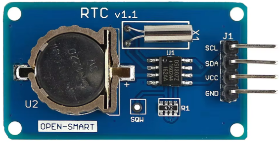

Composant DS1307
Le DS1307 est un circuit intégré utilisé comme horloge temps réel (RTC). Il garde l’heure (heures, minutes, secondes) ainsi que la date (jour, mois, année), même lorsque l’alimentation principale est coupée, grâce à une pile bouton de secours.
Il est largement utilisé avec des microcontrôleurs comme Arduino
pour des projets nécessitant une mesure précise du temps.
La communication se fait via le protocole I²C,
en utilisant deux lignes : SDA (données) et SCL (horloge).

Module DS1307 pour Arduino

Brochage du composant DS1307
Caractéristiques principales :
- Horloge temps réel (RTC) avec comptage secondes, minutes, heures, jour, mois, année.
- Communication via bus I²C (adresse 0x68).
- Alimentation 5V avec support de pile bouton (CR2032).
- Précision : environ ±2 minutes par mois.
- Stockage interne : 56 octets de RAM non volatile.
Applications typiques :
Le DS1307 est utilisé dans :
- Stations météo avec horodatage des données.
- Enregistreurs de données (data loggers).
- Horloges électroniques et calendriers.
- Projets domotiques nécessitant la gestion du temps.